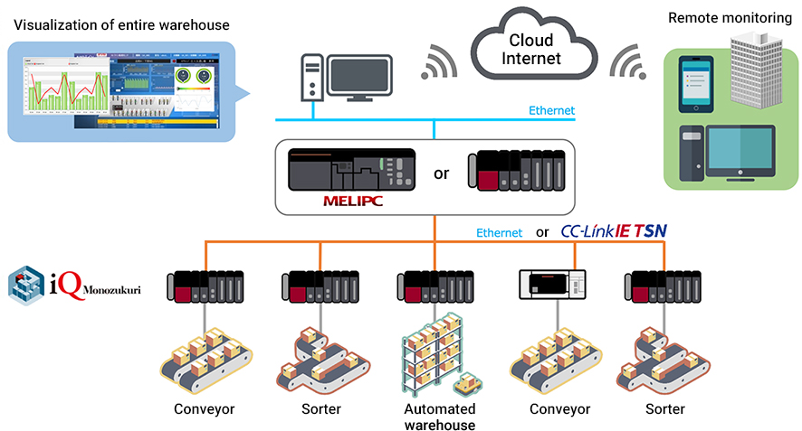

Solusi
Logistik

Gudang distribusi
- Visualisasi melalui pengumpulan data real-time
- Pemeliharaan prediktif dan preventif di tingkat gudang/mesin/peralatan
- Solusi hemat energi
Solusi untuk Masalah
| Masalah | Solusi |
|---|---|
| Peningkatan tingkat pemanfaatan (Pemantauan jarak jauh informasi kesalahan, dll.) |
24 jam 365 hari Visualisasi melalui pengumpulan data real-time |
| ❶ Memastikan operasi non-stop dari peralatan gudang ❷ Pengurangan waktu henti (Pengurangan biaya pemeliharaan penanganan material, dll.) |
❶ Dengan teknologi AI dan edge computing Pemeliharaan prediktif dan preventif di tingkat gudang/mesin/peralatan ❷ Dengan perekam sistem dan kamera tujuan umum solusi pemeliharaan korektif |
|
|
1. Visualisasi melalui pengumpulan data real-time
(Pemantauan jarak jauh informasi kesalahan, dll.)
Visualisasi melalui pengumpulan data real-time
Konfigurasi Sistem
Pemantauan lokal dan jarak jauh status operasi gudang dengan GENESIS64™

Fitur
Pemantauan kuat dari seluruh gudang hingga mesin individual

Pantau dan pelihara seluruh gudang Anda dari jarak jauh kapan saja, di mana saja
Dengan menggunakan fungsi pemantauan jarak jauh GENESIS64, pemantauan dan pemeliharaan jarak jauh melalui Internet dimungkinkan.
Dengan fungsi WebHMI/MobileHMI, Anda dapat memantau perangkat apa pun kapan saja, di mana saja.
Ini juga memiliki fungsi untuk memberi tahu Anda melalui e-mail ketika alarm terdeteksi.
Pemantauan dan pemeliharaan jarak jauh seluruh gudang kapan saja, di mana saja melalui cloud
Dengan menggunakan fungsi komunikasi IoT untuk cloud GENESIS64, dimungkinkan untuk memantau beberapa gudang secara kolektif melalui cloud.
Dengan menghubungkan dengan Azure Microsoft, dimungkinkan untuk berkomunikasi dengan aman dengan cloud.
Contoh Solusi

Pemantauan Real-time Meningkatkan Pemanfaatan Pabrik sebesar 38%!
Perusahaan A, yang tidak dapat meningkatkan tingkat operasi, ingin menyelidiki penyebabnya dan melakukan perbaikan. Dengan memperkenalkan sistem untuk memantau peralatan baru dan lama yang melintasi pabrik dan mesin pemrosesan dari produsen yang berbeda secara terintegrasi, kami berhasil meningkatkan tingkat operasi sebesar 38%. Apa rahasianya?
Daftar Produk
Daftar alat visualisasi berdasarkan tingkat

2. Pemeliharaan prediktif dan preventif di tingkat gudang/mesin/peralatan
❷ Pengurangan waktu henti
(Pengurangan biaya pemeliharaan penanganan material, dll.)
❷ Dengan perekam sistem dan kamera tujuan umum pemeliharaan korektif
Konfigurasi Sistem

fitur
Realisasi pemeliharaan prediktif/preventif di tingkat gudang.
MELSOFT MaiLab adalah perangkat lunak analisis/diagnosis data yang dengan mudah mewujudkan pemeliharaan preventif dan peningkatan kualitas di lokasi.
Teknologi AI/edge computing dan metode statistik memungkinkan diagnosis real-time dan analisis offline data lapangan dalam satu produk. Pemeliharaan prediktif dimungkinkan dengan mengekstrak aturan diagnostik melalui analisis offline data yang terakumulasi dan memberi umpan balik hasil diagnosis ke lokasi secara real-time.

pemeliharaan prediktif/preventif di tingkat peralatan penanganan material.
Dengan memanfaatkan e-F@ctory Starter Package, dimungkinkan untuk mewujudkan pemantauan abnormalitas berbagai peralatan dan perangkat.
Pemeliharaan Korektif di tingkat peralatan penanganan material.
Dengan menggunakan perekam sistem, "Perekaman Lengkap" dan "Analisis Mudah" status sistem jika terjadi anomali, dapat secara dramatis mengurangi waktu henti.

Contoh Solusi

Waktu Siklus Meningkat 10% dengan Pemantauan Silinder!
Perusahaan "A" memiliki kekhawatiran tentang kinerja peralatan yang rendah, yang menyebabkan kecepatan produksi lambat dan jadwal produksi tertunda. Perusahaan memutuskan untuk memperkenalkan pemantauan silinder, dan melihat peningkatan 10% dalam waktu siklus. Apa rahasia keberhasilannya?

Mengurangi 93% Waktu Penyelidikan Penyebab Masalah Peralatan dengan Perekam Sistem!
Perusahaan A tidak dapat mereproduksi kesalahan pada saat masalah peralatan dalam proses perakitan otomatis, yang memproduksi beragam produk dalam jumlah kecil, dan membutuhkan waktu untuk menyelidiki penyebabnya. Dengan memperkenalkan 'perekam sistem', kami berhasil mengurangi waktu yang dibutuhkan untuk mengidentifikasi penyebab sebesar 93% dan meningkatkan OEE (Efektivitas Peralatan Keseluruhan). Apa rahasianya?

Identifikasi penyebab masalah dengan cepat. Mencapai pemberhentian NOLL!
Perusahaan A mengalami masalah dengan pemberhentian singkat pada peralatan yang disebabkan oleh masalah langka. Perusahaan menjadi mampu mengidentifikasi penyebab masalah berdasarkan log operasi peralatan dan data video yang direkam dan menghilangkan pemberhentian singkat dengan mengambil tindakan permanen. Hal ini akibatnya meningkatkan rasio operasi peralatan. Apa rahasia keberhasilan Perusahaan A? Apa rahasia keberhasilannya?
Daftar Produk
Waktu henti nol diwujudkan dengan pemeliharaan prediktif melalui analisis data dan fungsi diagnosis umur setiap peralatan FA.

3. Solusi hemat energi
Visualisasi konsumsi energi
Menghilangkan pemborosan energi
Pengurangan biaya listrik dasar
Visualisasi dengan peralatan hemat energi
Analisis data energi oleh EcoAdviser
Manajemen permintaan untuk seluruh gudang
Penghematan energi dengan inverter FREQROL
Konfigurasi Sistem

fitur
Pemantauan dan analisis konsumsi energi untuk membantu meningkatkan operasi
EcoServer III mengkonsolidasikan konsumsi energi dan informasi operasi peralatan penanganan material dan menganalisisnya dengan EcoAdviser untuk membantu meningkatkan operasi

Mengurangi biaya listrik dasar dengan mengelola permintaan di seluruh gudang
"Pergeseran Puncak dan Pemotongan Puncak" diwujudkan oleh pengukuran energi yang terkait dengan periode permintaan.
Berdasarkan hasil analisis, kita dapat meninjau peralatan operasi dan melakukan operasi rotasi peralatan pendingin udara untuk mencapai pergeseran puncak dan pemotongan puncak untuk membatasi permintaan daya sesaat.

Kemampuan untuk melihat grafik kurva beban permintaan dan grafik tren termasuk grafik permintaan yang diperkirakan dengan sekali lihat

Contoh Solusi
Menggunakan AI untuk Mengurangi Jam Kerja Analisis Energi sebesar 92%!
Perusahaan A, menghabiskan banyak waktu menganalisis data energi yang dikumpulkan di bidang pemasangan PCB. Alat analisis bertenaga AI mengurangi energi dan upaya analisis. Apa rahasianya?

Visualisasi Kerugian Mengurangi Konsumsi Energi sebesar 4%
Perusahaan "A" ingin mengurangi konsumsi energi. Perusahaan memvisualisasikan kerugian energi yang terkait dengan status operasi setiap peralatan, dan berhasil mengurangi konsumsi energi lini produksinya sebesar 4%. Apa rahasia keberhasilannya?